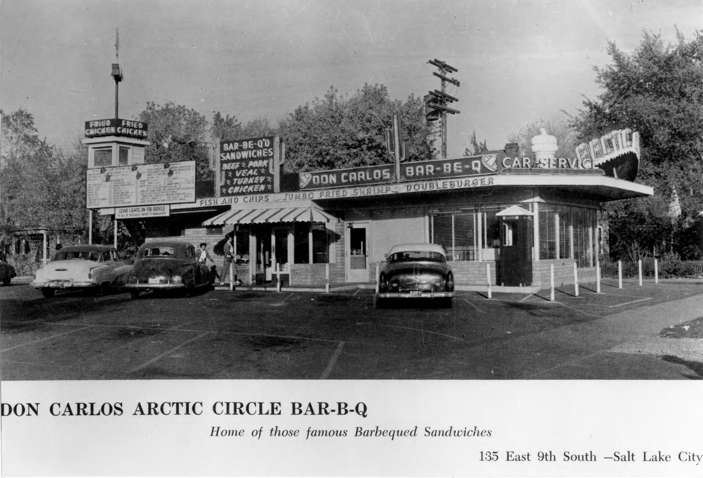
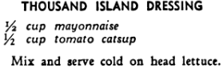

Where did it come from?
The oldest reference to a similar sauce comes from a 1900 New Orleans cookbook which has a recipe for “thousand island dressing” made from equal parts mayonnaise and ketchup.
While we may not know who the first person was to mix ketchup and mayonnaise together, we do know that the combination became popular in Utah. Utah tradition follows that it was invented by Don Carlos Edwards, founder of the Arctic Circle restaurant franchise.
Some sources suggest that Edward created it as a burger sauce called “pink sauce” in the 1920s until he opened Arctic Circle where it became a staple and got the name “fry sauce”.